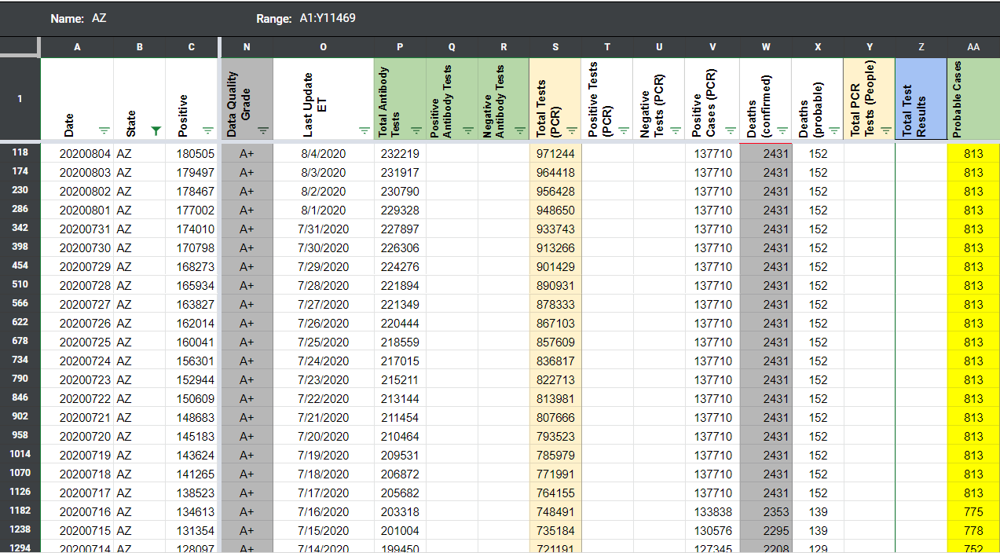
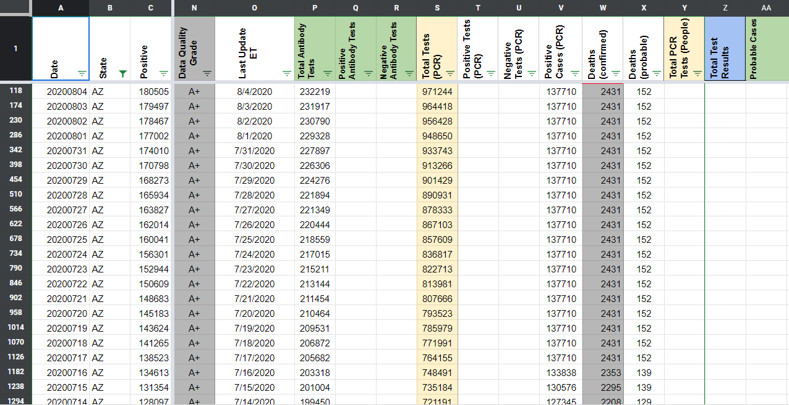

[AZ] Probables Backfill
State or US: Arizona
Describe the problem CTP started reporting probable cases on 7/28. The states historical probables can be calculated from total cases - confirmed cases. We can back-fill these values back to 6/11, when AZ first reported probable cases (https://covid-tracking.slack.com/archives/CUQ4MMTPD/p1591901671447700?thread_ts=1591901671.447700)
***Note: AZ hover feature to get confirmed/probable breakdown was broken on 6/12 (https://covid-tracking.slack.com/archives/CUQ4MMTPD/p1591987052058800) and 7/18 - 8/4 (https://covid-tracking.slack.com/archives/CUQ4MMTPD/p1595101365055300?thread_ts=1595101365.055300) For these cases, we’re carrying over the probable cases value like we did with the confirmed cases value.
Link to data source https://www.azdhs.gov/preparedness/epidemiology-disease-control/infectious-disease-epidemiology/covid-19/dashboards/index.php
AFTER:

BEFORE:
